MensajerO - Grupo 3¶
Documentación del proyecto¶
Gestión del proyecto¶
La gestión del proyecto fue mediante un equipo de pares. Al comienzo del mismo se analizaron los requerimientos y se definio un backlog de tareas que había que realizar para completarlo. Luego se discutio en el equipo un orden y una organización para esas tareas. Durante el transcurso del proyecto, se plante el equipo de manera que todo el equipo pueda tomar tareas de cualquier parte del proyecto, por lo que la división de tareas era para asignar un encargado de cada tarea, pero cualquiera podría ayudar o tomar algun issue acerca de dicha funcionalidad.
División de tareas¶
- Documentación sobre instalación y librerias: Ramiro Doi
- Principales funcionalidades del server: Mateo Bosco
- Otras funcionalidades del server: Uriel Kusnesov
- Testing y coverage: Matias Capristo
- CMake: Ramiro Doi
- Pantalla de contactos y chats abiertos: Uriel Kusnesov
- Integracion del server con el cliente: Mateo Bosco
- Pantalla LogIn: Matias Capristo
- Pantalla de creacion de usuarios: Ramiro Doi
- Pantalla de conversacion: Uriel Kusnesov
- Pantalla de perfiles: Mateo Bosco
- Investigacion de herramientas y testing: Matias Capristo
- Ubicacion GPS y fotos: Uriel Kusnesov
- Resolucion de issues y tareas menores: Todo el equipo
Cronograma¶
El cronograma del proyecto se baso en la división en 3 iteraciones. El tiempo de estas fue pensado en relación a las entregas y checkpoints del trabajo.
- Primera iteración:
- Esta incluye la realización de todas las funciones del servidor. Cumplir con los requerimientos del server, realizar tests sobre los mismos. Realizar la documentación de instalación del server y sus dependencias. El contenido de esta iteración fue estimado para finalizarse el 30/04/2015.
- Segunda iteración:
- Esta incluye todas las funcionalidades del cliente, a excepcion del check in, el manejo de imagenes (foto de perfil). Integración de estas funcionalidades con las ya realizadas del server. Correción de issues que surgen tanto del servidor como del cliente. El contenido de esta iteración fue estimado para finalizarse el 04/06/2015.
- Tercera iteración:
- Esta incluye la inclusión de los features de check in y manejo de fotos de perfil. Corrección de issues que surgen tanto del servidor como del cliente. Realización de la documentación restante y en un formato unificado con el resto de la documentación. Preparación de la presentación. El contenido de esta iteración fue estimado para finalizarse el 25/06/2015
Control de versiones y workflow¶
El control de versiones del proyecto fue mediante Github. Se utilizaron dos repositorios distintos, uno para el proyecto de servidor y otro para el proyecto del cliente.
Sistema ticketing¶
Para el sistema de ticketing, los issues fueron cargados en el mismo github, donde eran asignados a un responsable para su resolución.
Documentacion técnica¶
Doc ambiente de desarrollo¶
Para el desarrollo de la aplicación, se usaron las siguientes herramientas para el armado del ambiente.
Aplicación Móvil¶
- Lenguaje: Java
- IDE: Android Studio
- Android SDK
Rest API¶
- Lenguaje: C++
- IDE: Eclipse
Doc de librerias y compilación¶
Aplicación Móvil¶
Rest API¶
- Mongoose (https://github.com/cesanta/mongoose)
- RocksDB (http://rocksdb.org/)
- Json Cpp (https://github.com/open-source-parsers/jsoncpp)
- Google test (https://code.google.com/p/googletest/)
Doc de arquitectura/diseño¶
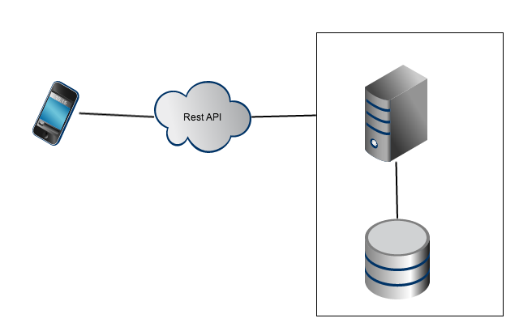Doc de Flujo entre Activities¶
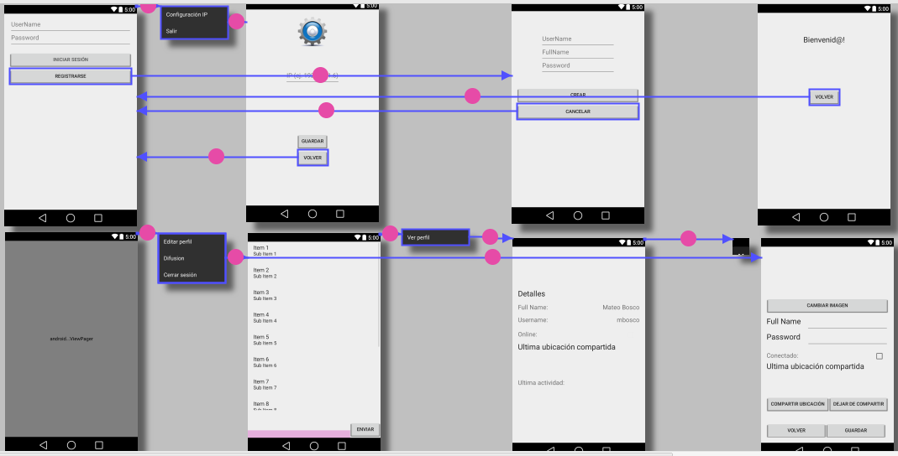Doc de código¶
Doc de REST API¶
Todas las llamadas a la api tienen una respuesta json con el siguiente formato: {result: [“OK”, “ERROR”], code:[<<sólo presente si el result es ERROR], data: <<Json con datos de respuesta en caso de result: “OK”>>}
- Login
- /api/login
- Tipo: GET
- params: username (header), password (header)
- response data: {username : string , token : string , name : string , online : bool , profileImage : string , latitud : double , longitud : double , checkinDatetime : string}
- Logout
- /api/logout
- Tipo: GET
- params: username (header), token (header)
- response data: {username : string , token : string , name : string , online : bool , profileImage : string , latitud : double , longitud : double , checkinDatetime : string}
- Validate Token
- /api/token
- Tipo: GET
- params: username (header), token (header)
- response data: {username : string , token : string , name : string , online : bool , profileImage : string , latitud : double , longitud : double , checkinDatetime : string}
- Create User
- /api/user
- Tipo: POST
- params: userJson (body)
- response data: {username : string , token : string , name : string , online : bool , profileImage : string , latitud : double , longitud : double , checkinDatetime : string}
- ejemplo userJson: {“username”: “mateo” , “password”: “contrasenia” , “name”: “mateo bosco”}
- Update Profile
- /api/updateProfile
- Tipo: PUT
- params: username (header), token (header), json con los campos que se quieren modificar (body)
- response data: {username : string , token : string , name : string , online : bool , profileImage : string , latitud : double , longitud : double , checkinDatetime : string}
- ejemplo body: {“name”: “mateo” , “online”: true , “latitud”: 90, “longitud”:34, “location”:”colegiales”}
- Send Message
- /api/message
- Tipo: POST
- params: username (header), token (header), messageJson (body)
- response data: {body : string , datetime : string , emisor : string , receptor : string , id : string }
- ejemplo messageJson: { “emisor”:”mateo”, “receptor”:”pepe”, “body”:”mensaje para pepe” }
- Send Diffusion Message
- /api/message
- Tipo: POST
- params: username (header), token (header), messageJson (body)
- response data: {body : string , datetime : string , emisor : string}
- ejemplo messageJson : { “emisor”:”mateo”, “receptor”:””, “body”:”mensaje para todos” }
- Get Conversations
- /api/conversation
- Tipo: GET
- params: username (header), token (header) , USER (url parameter)
- response data: { user1 : string , user2 : string . total_messages : int , id : string }
- Get Messages
- /api/getMessages&username=<USER>
- Tipo: GET
- params: username (header) , token (header) , USER (url parameter)
- response data: vector [ {body : string , datetime : string , emisor : string , receptor : string , id : string } ]
- Get User Profile
- /api/user&username=<USER>
- Tipo: GET
- params: username (header) , token (header) , USER (url parameter)
- response data: {username : string , token : string , name : string , online : bool , profileImage : string , latitud : double , longitud : double , checkinDatetime : string}
- Get Users Profile
- /api/user
- Tipo: GET
- params: username (header) , token (header)
- response data: vector [ {username : string , token : string , name : string , online : bool , profileImage : string , latitud : double , longitud : double , checkinDatetime : string}
- Codigos de error:
- INVALID_USERNAME = 1 // El username no existe en la base de datos
- INVALID_PASSWORD = 2 // La password no es correcta
- INVALID_TOKEN = 3 // El token no es correcto
- ERROR_SEND_MESSAGE = 4 // Error al enviar un mensaje
- ERROR_USER_PROFILE_DOESNT_EXISTS = 5 // El usuario que se busca no existe
- USERNAME_ALREADY_EXISTS = 6 // El nombre de usuario ya existe
- NO_PASSWORD = 7 // No se envio password
- NO_USERNAME = 8 // No se envio username
- INVALID_JSON = 9 // El json de body tiene formato invalido
- ERROR_ON_SAVE = 10 // Error al guardar en la base de datos
Doc de pruebas¶
Aplicación móvil¶
Librería utilizada: JUnit
- Cobertura: Jacoco
- Nivel de cobertura:
Rest API¶
Librería utilizada: gtest (https://code.google.com/p/googletest/)
- Cobertura: gcov (https://gcc.gnu.org/onlinedocs/gcc/Gcov.html)
- Nivel de cobertura (Line Coverage) : 97.5% (1505/1543)
- Nivel de covertura (Function Coverage) : 97.8 % (318/325)
Manual de usuario del cliente¶
Intro general de la app¶
La aplicación MensajerO es una aplicacón de mensajería instantanea, que nos permite mantener conversaciones con distintos usuarios registrados, mantener información acerca de nuestro perfil, y compartir nuestra ubicación al resto de los contactos asi como ver el perfil del resto de nuestros contactos y enviarle mensajes a todos al mismo tiempo. Podremos diferenciar entre aquellos contactos con los que ya hemos mantenido conversaciones y aquellos con los que no lo hemos hecho.
Features incluidos¶
Entre los features incluidos podemos encontrar:
Eleccion de red
Registro de usuarios
Servicio de LogIn, con validacion de datos
- Vista de contactos con su estado
- Tab de contactos con chat abierto
- Tab de todos los contactos registrados
- Edicion de perfil
- Foto de perfil
- Elegir foto de la galería del dispositivo
- Tomar foto en el momento
Nombre para mostrar en lista de contactos
Cambio de constraseña
Estado
Compartir ubicación actual (Tomada por GPS)
Visualización del perfil de otros contactos
Recuerda datos de sesión
Instalación y configuracón¶
Conectar el teléfono a la pc a través del cable de USB.
Copiar a la memoria interna ó tarjeta micro SD del teléfono la aplicación “Grupo3-MensajerO.apk”.
Desconectar el teléfono de la pc.
Navegar a la carpeta que se copió la aplicación a partir del explorador de carpetas del teléfono.
- Presionar la aplicación y completar la acción mediante “Packege installer”.
(En caso de que aparezca el siguiente mensaje de error “Por motivos de seguridad, su teléfono está configurado para bloquear la instalación de aplicaciones que no se hayan obtenido de Google Play.”, ir a ajustes –> administración de dispositivo, fuentes desconocidas, permitir la instalación de aplicaciones de origenes distinitos a Play Store –> aceptar Repetir los pasos a partir del paso 4.)
Aceptar los terminos y condiciones.
Ejecutar la aplicación.
Como usarla paso a paso¶
Eleccion de red:
Como primer paso luego de instalar la aplicación y abrirla desde el dispositivo, se mostrara la pantalla de LogIn. Aquí para configurar la red hay que acceder al menu, opcion Configuración IP y se desplegara la pantalla de eleccion de IP de red para poner la IP del servidor en la red en la que se encuentra conectado (Esta puede encontrarse abriendo la consola de comandos y poniendo el comando “ifconfig -a”). Una vez ingresada la IP del servidor en el campo de texto del centro de la pantalla, se procede a presionar el boton “Guardar” y si la carga de la direccion IP es correcta una alerta le indicara que esta se guardo con éxito, por lo que al cerrar la alerta puede presionar el boton “Volver” que lo devolvera a la pantalla de LogIn. Una vez hecho este paso los datos ingresados se mantendran guardados hasta tanto apague el dispositivo.
Registro de usuario:
Para registrar su usuario, una vez configurada la red, debe presionar el boton “Registrarse” de la pantalla de LogIn y este lo llevara a la pantalla de registro de usuario. Una vez en ella tendra para completar sus datos, en primer lugar “UserName”, en segundo lugar “FullName” y por ultimo “Password”, igualmente cada campo tendra un texto provisorio indicando que data debe completar en el mismo. Cuando termine de completar los datos, puede proceder a presionar el boton “Crear” para que se envíen los datos al servidor, o si no deseaba registrar un nuevo usuario puede presionar “Cancelar” para volver a la pagina anterior. Al crear un usuario si este se registro correctamente se abrira la pantalla de bienvenida y tocando el boton “Volver” podrá regresar a la pantalla de LogIn.
LogIn:
Para iniciar sesión debe tener un usuario registrado. En ese caso en la pantalla de LogIn debe ingresar su username y password en los campos de texto que así lo indican en el centro de la pantalla y luego presionar el boton “Iniciar Sesión”. De haber algun problema en el inicio de sesión una alerta se lo indicara, de lo contrario se iniciara sesión y sera redirigido a la pantalla principal con las listas de contactos para comenzar conversaciones. Una vez hecho este paso los datos ingresados se mantendran guardados hasta tanto apague el dispositivo, por lo que al volver a abrir la aplicacion se hara el inicio de sesion automatico con los datos ingresados.
Lista de contactos:
Al iniciar sesión se abrira una pantalla con dos pestañas. La primera tendra una lista de contactos con los que alguna vez se ha tenído alguna conversación. La segunda tendra una lista de todos los contactos registrados en la aplicación. Para desplazarse entre estas pestañas, puede hacerlo arrastrando la pantalla hacia los lados con el dedo. Cada contacto va a aparecer listado con su nombre completo, su estado de conexión y su foto de perfil.
Conversación:
Para abrir una conversación es suficiente con tocar con el dedo el registro de un contacto en cualquiera de las listas anteriormente mencionadas. Una vez hecho esto se abrira la conversación con todos los mensajes previós entre estos contactos (si es que los hubiere) y se pueden ver todos los mensajes si no entran en la pantalla se puede desplazar con el dedo hacia arriba o abajo para visualizar los mismos. Los mensajes enviados por uno mismo se veran en el lado derecho de la pantalla mientras que los mensajes recibidos se veran del lado izquierdo. En la parte baja de la pantalla se podra ver un cuadro de texto de color rosado en el que podemos escribir un texto para envíar a nuestro contacto. Para hacer esto, luego de escribir el texto se debe presionar el boton “Enviar” y este se enviara y aparecer como fue dicho, del lado derecho.
Difusion:
Para enviar un mensaje a todos los contactos que se encuentren conectados, hay que entrar al menu de la pantalla de contactos, y elegir la opción “Difusion” y se abrira una ventan de conversación con el receptor difusion. Una vez enviado un mensaje a este se le enviara a todos los contactos conectados. Vale aclarar que el contacto difusion no guarda el historial de mensajes
Ver perfil del contacto:
Para ver el perfil del contacto con el que estamos conversando, se debe abrir desde las listas de contactos el chat con el mismo. Una vez abierto ingresar al menu y presionar la opción “Ver perfil”. Esto nos redireccionara a la pantalla del perfil del contacto seleccionado. En esta se podra visualizar la foto de perfil del mismo, junto con su nombre de contacto (el mostrado en la lista), su nombre de usuario y el estado de conexión del contacto. Para volver a la conversación se debe presionar la tecla de atras del dispositivo.
Editar mi perfil:
Para editar mi propio perfil se debe ingresar al menu desde la lista de contactos y presionar la opción “Editar perfil”. Esta abrira la pantalla con mis datos de perfil, foto, ubicación, nombre, contraseña y estado. Los textos de nombre y password podran ser editados asi como la foto de perfil. Para modificar la foto de perfil hay que presionar el boton “Cambiar imagen” y este nos abrira un cuadro con dos opciones. La opcion “Existente” nos llevara a la galería del dispositivo para elegir una foto, la otra opcion “Tomar foto” nos llevara a la camara del dispositivo para tomar una foto en el momento que quede como foto de perfil. Una vez realizado cualquiera de las dos opciones, aparecera la foto en la pagina del perfil propio. Luego de que se modificaron los datos de la manera deseada se procede a presionar el boton “Guardar” para guardar los datos y una alerta nos indicara si se guardaron de manera exitosa. Si no se desean guardar los cambios se debe presionar el boton “Cancelar” y este nos devolvera a la lista de contactos.
Compartir mi ubicación:
Para compartir mi ubicación debo entrar a la edición de mi perfil de la manera anteriormente indicada. En este perfil se debera presionar el boton “Compartir ubicación” y en ese momento el dispositivo buscara mediante GPS la ubicación actual de la manera mas exacta posible (un simbolo de que la aplicación esta buscando la ubicación aparecera en la pantalla para avisar al usuario que se encuentra en proceso su solicitud) y al encontrarla la mostrara en el cuadro de “Última ubicación compartida” y se guardara la misma (una alerta nos indicara que la ubicación se compartio correctamente). Esta ubicación aparecera al resto de los contactos junto a mi nombre completo en sus listas de contactos. Si se desea no compartir mas la ubicación al resto de los contactos se debe presionar el boton “Dejar de compartir” y el cuadro “Última ubicación compartida” quedará vacío, y la alerta nos indicara que el cambio fue guardado. Vale aclarar que al presionar compartir o dejar de compartir ubicación el cambio es automaticamente guardado en el perfil del usuario sin necesidad de presionar el boton guardar de la edición de perfil.
Screenshots¶
Nos dirigimos al menú del teléfono e iniciamos la aplicación.
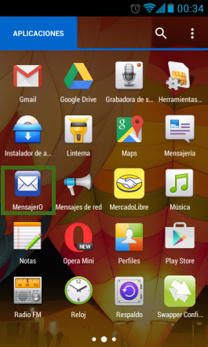Una vez iniciada la aplicación nos dirigimos a la pantalla “Configuración IP” a partir del menú de opcíones, en ella podremos configurar nuestra IP para conectarnos con el server (el mismo debe estar corriendo. VER: Documentación de administrador). Una vez configurada y salvada presionamos el botón “Volver”.


Otra vez en la pantalla de “Login” presionamos “Regristarse” y colocamos el usuario a crear y presionamos el botón “Crear”. Cuando aparezca la pantalla de bienvenida presionaremos el botón “Volver”.
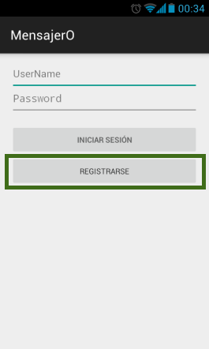 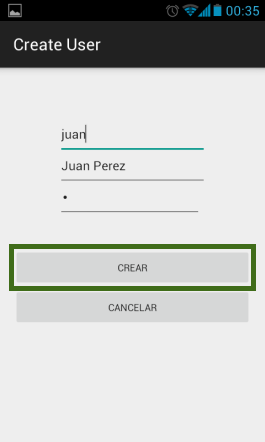
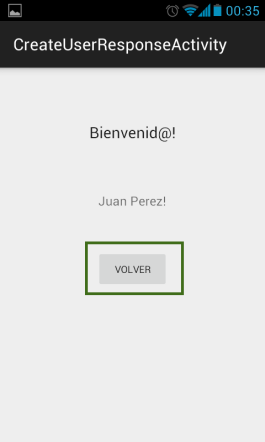
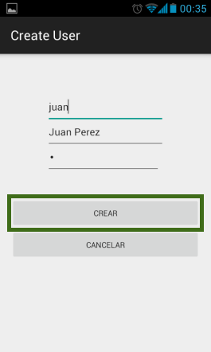
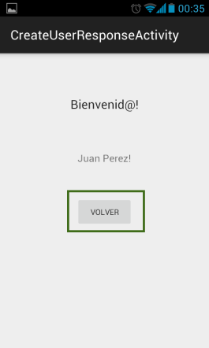
En la pantalla de “Login” ingresaremos con el usuario recientemente creado y presionaremos el botón “Iniciar Sesión”.

En la pestaña de “Contactos” podremos ver a todos los usuarios conectados y no conectados.
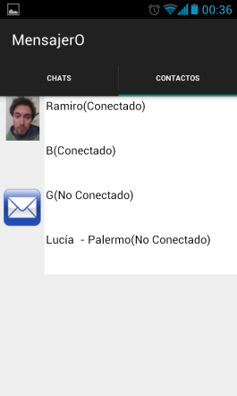Podremos mandar mensajes a de forma individual a un usuario ó a partir de una “Difusión”.

 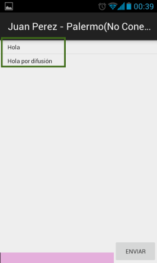
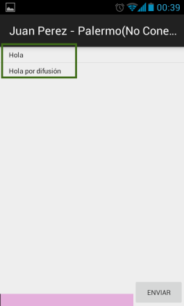
Dentro de la pantalla de conversación con un contacto si presionamos la opción “Ver Perfil” desde el botón de menú podremos ver el perfil completo del usuario.

Si presionamos la opción “Editar Perfil” desde el botón de menú en la pantalla de Chats/Contactos podremos actualizar nuestros datos, cambiar la foto de perfil y compartir nuestra ubicación mediante GPS.
 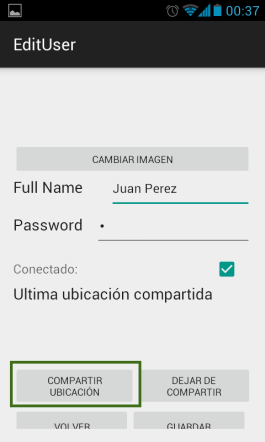
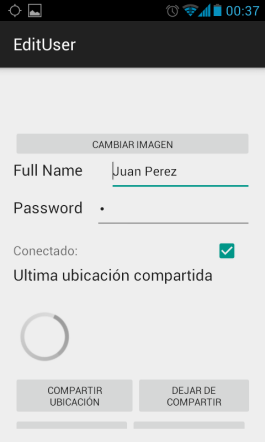
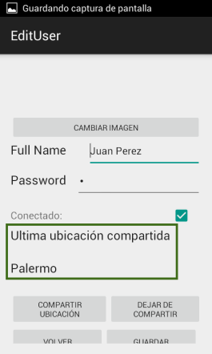
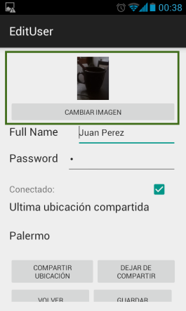
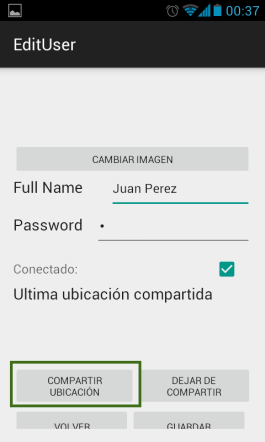
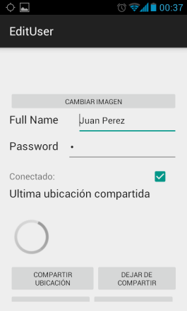
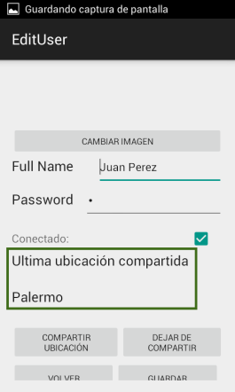
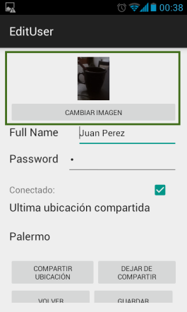

Una vez que querramos desloguearnos de la aplicación desde la opción “Cerrar Sesión” desde el botón de menú podremos hacerlo.


Known issues¶
- Cuando se cambia la foto de perfil por una existente en la galeria, en ciertas ocasiones esta foto aparece rotada.
- Cuando se gira el celular para utilizarlo de forma horizontal, algunos controles quedan desfasados.
- En celulares de pantalla pequeña (aproximadamente 3.5 pulgadas) los botones de “Volver” y “Guardar” del menú de “Editar perfil” no aparecen, también la palabra “Password” aparece cortada.
Troubleshooting¶
- Cambiar nuevamente la foto hasta que parezca correctamente.
- La mala apariencia de los botones no dificulta el funcionamiento de la aplicación, seguir usándola normalmente, en caso de tener un inconveniente por falta de algún botón ó ubicación indebida, volver el teléfono de manera vertical.
Testing realizado¶
Para recrear el uso normal y final de la aplicación se invitó a varios amigos que se la instalen y prueben. El resultado fue muy positivo dado que al no conocer que estaba permitido la utilizaron de varias maneras. Cabe destacar que el servidor en ningún momento se cayó ni devolvió datos incorrectos.
- Dentro de los test que pudimos apreciar destacamos:
- Envío de emoticones.
- Rotación y uso de la aplicación con el celular en horizontal.
- Registración simultanea de usuarios.
- Editar perfiles de usuario con diversas imágenes de la galería.
- Uso en simultaneo del envío de chats comunes como chats por difusión.
- Modelos de celulares testeados:
- Huawei Y300
- Motorola E
- Nexus 4
- Samsung Galaxy S3 mini
- Samsung Galaxy Fame
- Samsung Galaxy Fame Lite
- Samsung Galaxy Win
- Sony Xperia Z3
Documentación de administrador¶
Get started¶
El Server está desarrollado en C++, utiliza las librerías Mongoose para la gestión de http request, RocksDB para la base de datos (NoSQL), jsoncpp para la utilización del formato JSON y gTest para realizar los test.
Para los tests de la API se utilizo Python con las librerias requests y unittest
Para la compilación y ejecución del Server se utiliza la herramienta CMake.
Instalacón y configuración¶
Instalamos CMake
- Ejecutar el siguiente comando a partir de una nueva terminal
- sudo su
- apt-get install cmake
Instalación de la librería RocksDB
- Descargamos los fuentes del RocksDB desde el siguiente link
Descomprimir el archivo “rocksdb-master.zip”
Ingresar a la carpeta “rocksdb-master” a partir de una nueva terminal
- Ejecutar el siguiente comando para tener permisos de administrador
- sudo su
- Ejecutar el siguiente comando
- make all
- make install
- Ejecutar los siguientes comandos
- apt-get install libgflags-dev
- apt-get install libsnappy-dev
- apt-get install zlib1g-dev
- apt-get install libbz2-dev
Instalación de la librería jsoncpp
- Descargamos los fuentes de jsoncpp desde el siguiente link
Descomprimir el archivo “jsoncpp-master”
Ingresar a la carpeta “jsoncpp-master” a partir de una nueva terminal
- Ejecutar el siguiente comando a partir de una nueva terminal
- sudo su
- Ejecutar los siguientes comandos
- mkdir -p build/debug
- cd build/debug
- cmake -DCMAKE_BUILD_TYPE=debug -DJSONCPP_LIB_BUILD_STATIC=ON -DJSONCPP_LIB_BUILD_SHARED=OFF -G “Unix Makefiles” ../..
- make
Ingresar a la carpeta “/src/lib_json”
- Ejecutar el siguiente comando
- cp -a libjsoncpp.a /usr/local/lib
Instalación de la librería gTest
- Descargamos los fuentes de gTest desde el siguiente link
Descomprimir el archivo “gtest-1.7.0.zip”
Ingresar a la carpeta “gtest-1.7.0” a partir de una nueva terminal
- Ejecutar el siguiente comando para tener permisos de administrador
- sudo su
- Ejecutar los siguientes comandos
- ./configure
- make
- Ejecutar los siguientes comandos
- cp -a include/gtest /usr/include
- cp -a lib/.libs/* /usr/lib/
Forma de uso¶
Abrimos una nueva terminal
Ingresamos a la carpeta “src” donde tengamos los fuentes del Server
- Ejecutamos el siguiente comando
- cmake CMakeLists.txt
- Ejecutamos el make
- make
- Ejecutamos el server
- Para ejecutar los tests unitarios: ./server DEBUG
- Para ejecutar el server: ./server
- Para ejecutar los tests de la REST API: python ../ApiTests/rest_tester.py
- Para terminar el server, ejecutar desde otra terminal:
- kill -2 <server_pid>